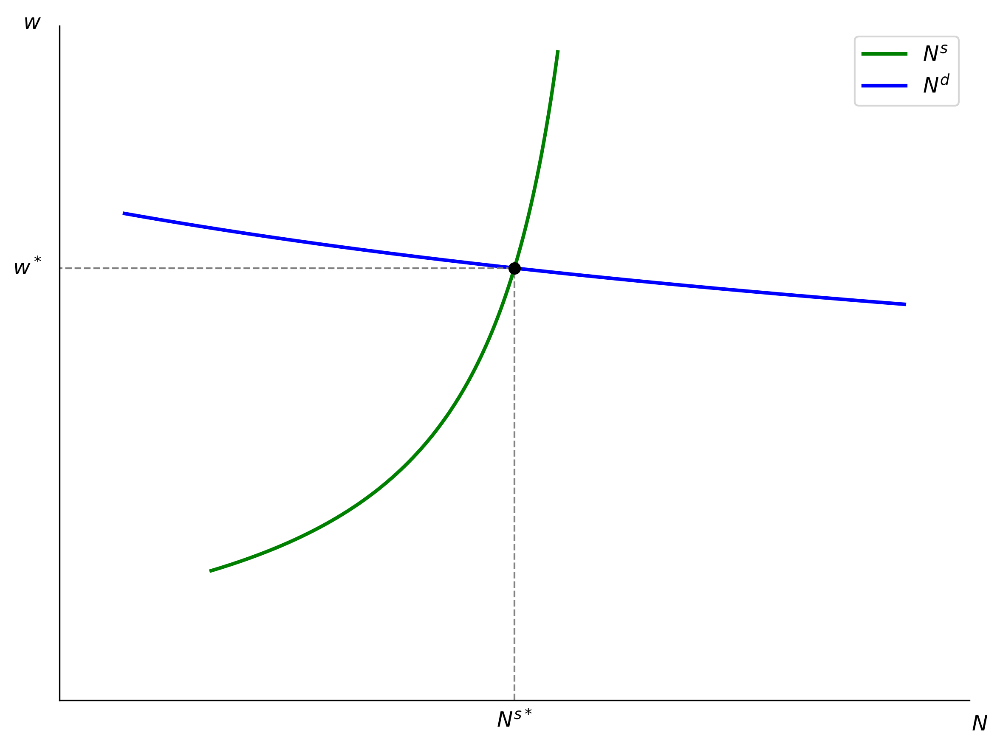
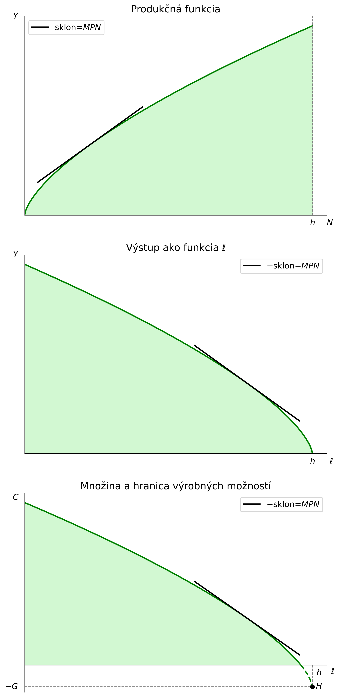
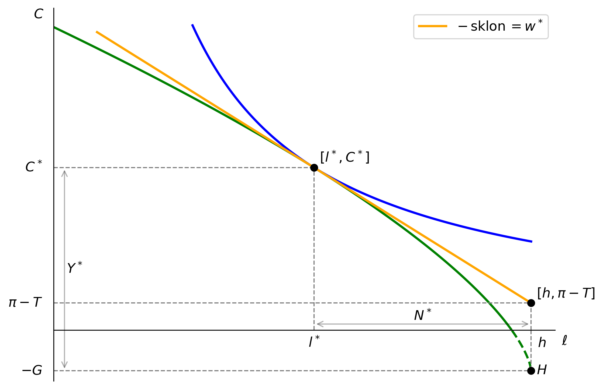
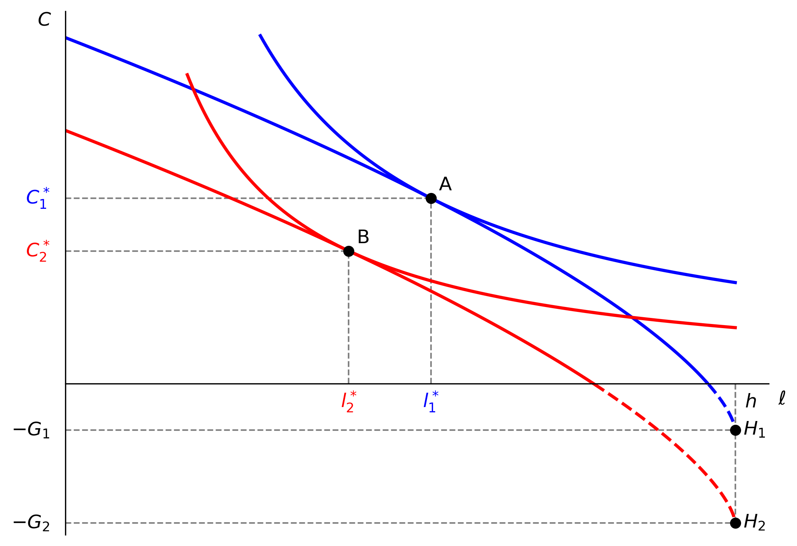
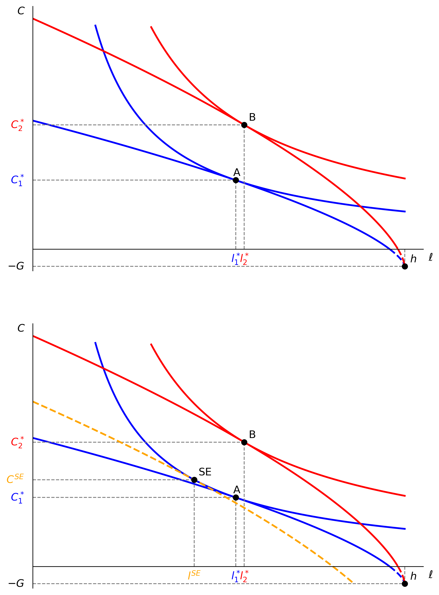
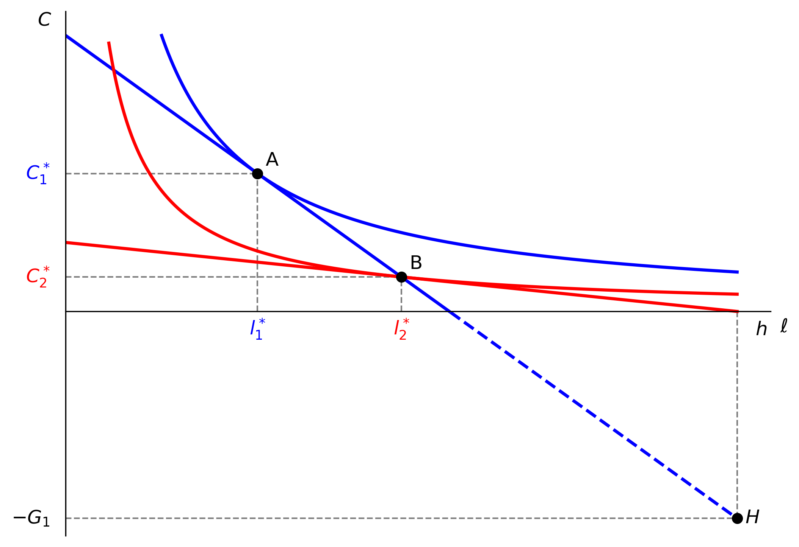
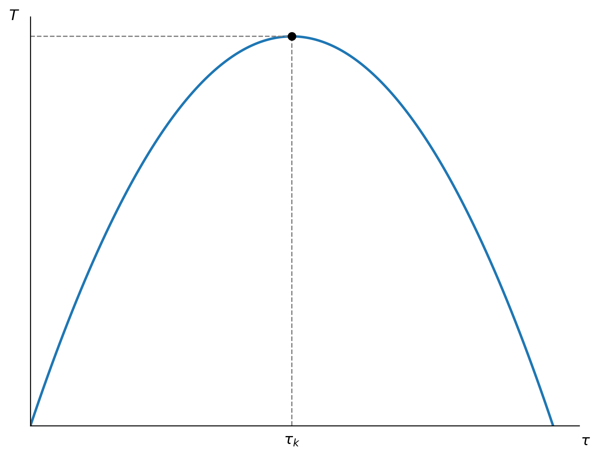
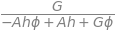

11. Statický model všeobecnej rovnováhy#
V kapitole (Voľný čas a spotreba) sme predstavili ekonomické prostredie, v ktorom sa spotrebiteľ rozhoduje medzi voľným časom a spotrebou kompozitného statku. Prostredie jedného obdobia sme formulovali ako model statického správania spotrebiteľa, v ktorom spotrebiteľ nesporí a nesie plnú zodpovednosť za svoje rozhodnutia o práci, voľnom čase a spotrebe. Na výrobu kompozitného statku využíva firmu, ktorej poskytuje prácu ako vstup do výroby.
V rámci agregácie predpokladáme, že celé hospodárstvo možno reprezentovať jediným reprezentatívnym spotrebiteľom. Ten zastupuje množstvo identických spotrebiteľov s rovnakými preferenciami, rovnakým ekonomickým postavením a rovnakým časovým rozpočtom. Podobne množstvo identických firiem s rovnakou celkovou produktivitou faktorov, zásobou kapitálu a produkčnou funkciou reprezentuje jedna reprezentatívna firma.
Tretím subjektom v ekonomike je vláda, ktorá financuje svoju spotrebu prostredníctvom daní vyberaných od spotrebiteľa. Všetky transakcie sa realizujú v jednotkách kompozitného spotrebného statku. Model preto abstrahuje od peňazí a cenovej hladiny a všetky premenné sú vyjadrené v reálnych jednotkách kompozitného statku.
Táto kapitola prezentuje statický model všeobecnej rovnováhy so spotrebiteľom, firmou a vládou.
11.1. Mikroekonomické správanie spotrebiteľa, firmy a vlády#
11.1.1. Spotrebiteľ#
Správanie reprezentatívneho spotrebiteľa sme opísali v kapitole (Voľný čas a spotreba). Charakterizuje ho úloha
výberom voľného času a spotreby maximalizovať funkciu užitočnosti (7.2) vzhľadom na
rozpočtové ohraničenie (7.5),
časové ohraničenie (7.1) a
nezápornosť rozhodovacích premenných (7.9).
Podľa podmienok prvého rádu úlohy platí, že
11.1.2. Firma#
V tomto prostredí možno správanie firmy charakterizovať úlohou maximalizácie zisku výberom vstupov (Maximalizácia zisku výberom vstupov).
Z makroekonomického hľadiska uvažujme dva vstupy ako výrobné faktory (pozri Makroekonomické vlastnosti produkčnej funkcie):
kapitál \(K\),
prácu \(N\).
Podmienky prvého rádu úlohy sú (3.6) a (3.7).
Firma sa v statickom modeli správa krátkodobo. Nedokáže meniť množstvo fixného vstupu. Kumulácia nového kapitálu a jeho zavedenie do prevádzky trvá istý čas. Preto považujeme zásobu kapitálu za fixnú. Pre zjednodušenie funkčných vzťahov predpokladajme \(K^d=1\). Prepíšme funkciu zisku firmy do tvaru
Resp. v reálnych jednotkách
kde reálna mzdová sadzba je nominálna sadzba podelená cenou spotrebného statku.
a reálny zisk je nominálny podelený cenou spotrebného statku
V statickom prostredí je preto správanie firmy charakterizované podmienkou (3.7), ktorú možno zapísať v tvare
Rovnica (11.2) charakterizuje dopyt po práci zobrazený v pravom paneli na Obr. 3.1. Keďže hraničný produkt práce je klesajúcou funkciou práce, funkcia dopytu po práci je klesajúcou funkciou reálnej mzdy. \(w\). Hraničný produkt práce sa zvýši, ak sa celková produktivita faktorov zvýši, Ceteris paribus. Zvýšenie \(A\) predstavuje v pravom paneli na Obr. 3.1 posun krivky dopytu doprava.
11.1.3. Vláda#
V rámci spoločenskej dohody existuje prerozdelenie časti národného príjmu a správa spoločného majetku, ktoré realizuje vláda. Preto zo zákona ekonomické subjekty platia dane, ktoré vláda prerozdelí, alebo za ktoré kumuluje a spravuje vládny majetok. Budeme uvažovať s jednoduchou koncepciou. Vláda zo svojich príjmov financuje výdavky. V realite vládne investície môžu zvýšiť celkovú produktivitu faktorov firmy (stavba diaľnic a ciest) alebo blahobyt spotrebiteľa (stavba parku). V našich modeloch ignorujeme možnosť zvyšovať produktivitu alebo blahobyt prostredníctvom vládnej politiky. Vláda v našej interpretácii je subjekt, ktorý nakúpi tovar a hneď ho zlikviduje.
V jednom období si vláda rovnako ako spotrebiteľ nemôže požičať a nemá úspory. Verejný rozpočet musí byť vyrovnaný
Príjmy vlády predstavuje výber daní od spotrebiteľa \(T\). Výdavky vlády sú vládne nákupy \(G\).
Vzájomné ekonomické vzťahy medzi spotrebiteľom, firmou a vládou vytvárajú systém všeobecnej rovnováhy. Jednotlivé subjekty vstupujú do ekonomických vzťahov prostredníctvom trhov, na ktorých realizujú svoje rozhodnutia o spotrebe, výrobe a práci.
V statickom modeli uvažujeme dva trhy:
Trh produktov, na ktorom firma ponúka kompozitný statok a spotrebiteľ spolu s vládou ho dopytujú.
Trh práce, na ktorom spotrebiteľ ponúka prácu a firma ju dopytuje ako výrobný vstup.
Všeobecná rovnováha predstavuje taký stav ekonomiky, v ktorom sú rozhodnutia spotrebiteľa, firmy a vlády navzájom konzistentné a na všetkých trhoch súčasne platí rovnováha medzi ponukou a dopytom.
Základné charakteristiky modelu sumarizuje tabuľka.
Charakteristika |
Hodnota |
|---|---|
Počet subjektov |
3 |
Subjekty |
Spotrebiteľ, firma, vláda |
Počet období |
1 |
Typ prostredia |
Statické |
Počet trhov |
2 |
Trhy |
Trh produktov, trh práce |
Konkurenčnú rovnováhu možno odvodiť dvoma spôsobmi. Prvým prístupom je decentralizované riešenie, v ktorom spotrebiteľ, firma a vláda riešia svoje optimalizačné úlohy samostatne a ich rozhodnutia sú koordinované prostredníctvom trhových cien. Druhým prístupom je centralizované riešenie, v ktorom sa rovnováha odvodzuje ako riešenie jednej spoločnej optimalizačnej úlohy. Za štandardných predpokladov vedú oba prístupy k rovnakému výsledku.
V ďalšom texte si predstavíme decentralizované aj centralizované riešenie statického modelu všeobecnej rovnováhy a ukážeme ich vzájomnú ekvivalenciu. Na podrobnejšiu analýzu rovnováhy využijeme centralizované riešenie.
11.2. Decentralizované riešenie#
Pri decentralizovanom riešení sa každý ekonomický subjekt rozhoduje samostatne a sleduje vlastné ciele.
Spotrebiteľ maximalizuje svoju funkciu užitočnosti vzhľadom na rozpočtové a časové ohraničenie. Výšku paušálnej dane považuje za danú.
Firma maximalizuje zisk vzhľadom na svoje výrobné možnosti.
Spotrebiteľ aj firma sa správajú konkurenčne. To znamená, že ceny nepovažujú za výsledok vlastného rozhodovania, ale za veličiny určené trhom. Po prechode na reálne veličiny je jedinou relevantnou relatívnou cenou reálna mzdová sadzba \(w\).
- Konkurenčná rovnováha
Konkurenčná rovnováha je alokácia \(\{\ell^*,C^*,N^{d*}\}\) a cena \(\{w^*\}\), pri ktorých platí:
spotrebiteľ výberom voľného času a spotreby maximalizuje funkciu užitočnosti (7.2) vzhľadom na rozpočtové ohraničenie (7.5), časové ohraničenie (7.1) a nezápornosť rozhodovacích premenných (7.9);
firma výberom dopytu po práci maximalizuje zisk (11.1);
trh práce je v rovnováhe;
trh produktov je v rovnováhe;
spotrebiteľ aj firma považujú reálnu mzdovú sadzbu \(w^*\) za danú.
V konkurenčnej rovnováhe sú rozhodnutia spotrebiteľa, firmy a vlády navzájom konzistentné a na oboch trhoch sa súčasne realizuje rovnováha medzi ponukou a dopytom.
Ponuka práce je
Dopyt po práci je \(N^d\).
Trh práce je v rovnováhe, ak sa ponuka a dopyt rovnajú
Ponuka statku je výstup vo firme \(Y\). Dopyt po statku je spotrebiteľov dopyt \(C\) spolu s dopytom vlády \(G\). Rovnováha na trhu produktov je
Riešenie konkurenčnej rovnováhy pozostáva z podmienok prvého rádu spotrebiteľa (7.11), (7.6), firmy (11.2), vládneho rozpočtu (11.3), podmienky rovnováhy na trhu práce (11.4) a na trhu produktov (11.5).
Riešením uvedených rovníc možno získať redukovaný tvar
a
Na grafickú interpretáciu konkurenčnej rovnováhy je dôležitá podmienka, ktorú možno získať kombináciou (7.11), (11.2) a (11.4) v tvare
Podmienka hovorí, že v rovnováhe sa hraničné ocenenie voľného času spotrebiteľom rovná hraničnému produktu práce. Keďže spotrebiteľ ponúka prácu a firma ju dopytuje, ide zároveň o podmienku rovnováhy na trhu práce.
Ponuka práce je opísaná podmienkou spotrebiteľa (7.11). Ak substitučný efekt zmeny mzdy preváži príjmový efekt, ponuka práce je rastúcou funkciou reálnej mzdovej sadzby. Grafická interpretácia ponuky práce je na Obr. 7.7.
Dopyt po práci je opísaný podmienkou firmy (11.2). Keďže hraničný produkt práce je klesajúcou funkciou práce, dopyt po práci je klesajúcou funkciou reálnej mzdovej sadzby.
Rovnováha na trhu práce je zobrazená na Obr. 11.1. Graf zobrazuje rastúcu ponuku práce a klesajúci dopyt po práci. V priesečníku oboch kriviek získame rovnovážnu prácu (11.8) a rovnovážnu reálnu mzdovú sadzbu (11.10).
Dosadením rovnovážnej práce do produkčnej funkcie získame rovnovážny výstup (11.9). (Pozri tiež pravý horný panel Obr. 2.7.)
Rovnovážnu spotrebu (11.7) následne získame z podmienky rovnováhy na trhu produktov (11.5).

Obr. 11.1 Rovnováha na trhu práce#
11.3. Centralizované riešenie#
11.3.1. Spoločenská autorita#
Predpokladajme existenciu osvietenej spoločenskej autority, ktorá pozná preferencie spotrebiteľa, produkčné možnosti firmy a potreby vlády. Na rozdiel od decentralizovaného riešenia táto autorita koordinuje rozhodnutia všetkých subjektov v ekonomike a hľadá takú alokáciu zdrojov, ktorá maximalizuje blahobyt spotrebiteľa vzhľadom na výrobné možnosti spoločnosti.
11.3.2. Množina výrobných možností#
Odvoďme množinu a hranicu výrobných možností. Výrobné možnosti ekonomiky sú obmedzené produkčnými možnosťami firmy, časovým rozpočtom spotrebiteľa a vládnymi nákupmi.
Napíšme ešte raz spotrebiteľove rozpočtové ohraničenie (7.5)
Za \(\pi\) dosaďme ziskovú funkciu firmy (11.1) a za \(T\) rozpočet vlády (11.3).
Za \(N^d\) dosaďme \((h-\ell)\).
Po úprave získame množinu výrobných možností
11.3.3. Hranica výrobných možností a Walrasov zákon#
Podľa Walrasovho zákona platí, že ak sú rozpočtové ohraničenia všetkých ekonomických subjektov splnené ako rovnosť a ak je v ekonomike s \(k\) trhmi v rovnováhe \(k-1\) trhov, potom musí byť v rovnováhe aj posledný trh.
V našom modeli existujú dva trhy:
trh práce,
trh produktov.
Ak preto platí rovnováha na trhu práce a sú splnené rozpočtové ohraničenia spotrebiteľa, firmy a vlády, musí byť v rovnováhe aj trh produktov. Presvedčme sa o tom.
Ak sa spotrebiteľ nachádza na hranici svojich spotrebiteľských možností, jeho rozpočtové ohraničenie sa spĺňa ako rovnosť
Za zisk firmy dosaďme ziskovú funkciu (11.1) a za dane vládny rozpočet (11.3)
Pri využití rovnováhy na trhu práce
dostaneme
Po úprave získame hranicu výrobných možností
Prvý člen na pravej strane predstavuje výstup ekonomiky
Hranicu výrobných možností preto možno zapísať v tvare
Po úprave dostaneme
Posledná rovnica je podmienkou rovnováhy na trhu produktov. Ukázali sme teda, že ak je trh práce v rovnováhe a rozpočtové ohraničenia ekonomických subjektov sa spĺňajú ako rovnosť, potom musí byť v rovnováhe aj trh produktov. V našom modeli tak Walrasov zákon umožňuje nahradiť jednu z podmienok trhovej rovnováhy druhou.
11.3.4. Identity systému národných účtov v statickom modeli#
Agregovaný výstup ekonomiky možno interpretovať ako hrubý domáci produkt (\(HDP\)). Podmienku rovnováhy na trhu produktov možno interpretovať ako identitu systému národných účtov (10.2), v ktorej výstup ekonomiky tvorí súčet jednotlivých zložiek agregátneho dopytu.
Keďže zásoba kapitálu je v jednom období konštantná, v ekonomike nevznikajú nové investície. Keďže modelovaná ekonomika je zatvorená, neobchoduje so zvyškom sveta. Preto sa identita národných účtov redukuje na tvar
V zatvorenej ekonomike sa čisté príjmy zo zahraničia rovnajú nule, a preto sa agregovaný výstup rovná agregovanému príjmu. Po dosadení podmienky vyrovnaného vládneho rozpočtu \(T=G\) získame identitu rozdelenia národného dôchodku (10.3)
Agregovaný dôchodok ekonomiky sa tak rozdeľuje na súkromnú spotrebu a daňové príjmy vlády.
11.3.5. Grafická interpretácia množiny výrobných možností#
Hranica výrobných možností vychádza priamo z produkčnej funkcie firmy (pozri tiež {ref}’produkcna_funkcia’) . Firma vyrába výstup využitím práce
Spotrebiteľ však nerozhoduje o množstve práce priamo. Rozhoduje sa o voľnom čase \(\ell\). Množstvo práce je preto určené časovým ohraničením
Dosadením za prácu do produkčnej funkcie získame vzťah medzi voľným časom a výstupom
Po odčítaní vládnych nákupov získame hranicu výrobných možností
Hranica výrobných možností je preto produkčná funkcia firmy zobrazená v priestore voľného času a spotreby.
Grafickú interpretáciu zobrazuje Obr. 11.2.
Pravý horný panel zobrazuje produkčnú funkciu firmy. S rastúcim množstvom práce rastie výstup, avšak čoraz pomalším tempom, pretože hraničný produkt práce klesá.
V prostrednom paneli je tá istá produkčná funkcia prekreslená do priestoru voľného času. Posun doprava po osi znamená vyšší voľný čas a súčasne nižšie množstvo práce. Preto výstup s rastúcim voľným časom klesá.
Spodný panel zobrazuje hranicu výrobných možností po zohľadnení vládnych nákupov. Vládne nákupy znižujú množstvo statkov dostupných na súkromnú spotrebu o hodnotu \(G\), a preto posúvajú hranicu výrobných možností nadol.
Vo všetkých troch paneloch je svetlozelenou farbou vyznačená množina výrobných možností. Každý bod nachádzajúci sa v tejto oblasti predstavuje realizovateľnú kombináciu vstupov a výstupov. Naopak, body ležiace nad hranicou výrobných možností nie sú dosiahnuteľné, pretože vyžadujú vyšší výstup, než umožňujú výrobné možnosti ekonomiky.
Hranica svetlozelenej oblasti predstavuje hranicu výrobných možností. Body na tejto hranici zodpovedajú efektívnemu využitiu všetkých dostupných zdrojov. Body nachádzajúce sa vo vnútri množiny sú síce realizovateľné, ale neefektívne, pretože časť zdrojov zostáva nevyužitá.

Obr. 11.2 Hranica a množina výrobných možností#
11.3.6. Konkurenčná rovnováha#
V centralizovanom prostredí spoločenská autorita maximalizuje blahobyt spotrebiteľa vzhľadom na výrobné možnosti ekonomiky.
- Spoločenské optimum
Spoločenské optimum je alokácia \(\{\ell^*,C^*\}\), pri ktorej spoločenská autorita výberom voľného času a spotreby maximalizuje funkciu užitočnosti (7.2) vzhľadom na množinu výrobných možností (11.12) a nezápornosť rozhodovacích premenných (7.9).
Ukážeme, že spoločenské optimum vedie k rovnakej alokácii ako decentralizované konkurenčné riešenie. Konkurenčná rovnováha je preto Paretovo efektívna.
Grafickú interpretáciu spoločenského optima zobrazuje Obr. 11.3. Hranica výrobných možností predstavuje technologické obmedzenia ekonomiky a indiferenčná krivka predstavuje preferencie spotrebiteľa. Spoločenská autorita hľadá takú kombináciu voľného času a spotreby, ktorá spotrebiteľovi poskytuje najvyšší možný blahobyt vzhľadom na výrobné možnosti ekonomiky.
Optimálna alokácia vzniká v bode dotyku indiferenčnej krivky a hranice výrobných možností. V tomto bode majú obe krivky spoločný sklon. Na obrázku je spoločný sklon zvýraznený oranžovou dotyčnicou.
Sklon indiferenčnej krivky predstavuje hraničnú mieru spotrebiteľskej substitúcie medzi voľným časom a spotrebou \(MRS(\ell,C)\).
Sklon hranice výrobných možností predstavuje hraničnú mieru transformácie medzi voľným časom a spotrebou
Podmienky prvého rádu úlohy spoločenskej autority sú
a
Prvá podmienka vyžaduje rovnosť hraničnej miery spotrebiteľskej substitúcie a hraničnej miery transformácie. Druhá podmienka vyžaduje, aby sa výroba nachádzala na hranici výrobných možností.
V decentralizovanom riešení sa sklon hranice výrobných možností interpretuje ako rovnovážna reálna mzdová sadzba
Porovnaním podmienky (11.13) s podmienkou konkurenčnej rovnováhy (11.11) vidíme, že obe úlohy vedú k rovnakej alokácii. Spoločenské optimum a konkurenčná rovnováha sú preto totožné.
Oranžová dotyčnica predstavuje hranicu spotrebiteľských možností pri rovnovážnej reálnej mzdovej sadzbe \(w^*\). Prechádza bodom \([h,\pi-T]\), ktorý zodpovedá situácii, keď spotrebiteľ nepracuje a jeho spotreba je financovaná iba zo zisku firmy po zdanení.
V konkurenčnej rovnováhe má hranica spotrebiteľských možností rovnaký sklon ako hranica výrobných možností. Preto sa v bode \([l^*,C^*]\) dotýka indiferenčnej krivky aj hranice výrobných možností. Graf tak ilustruje ekvivalenciu decentralizovaného a centralizovaného riešenia.

Obr. 11.3 Konkurenčná rovnováha#
11.4. Vplyv zvýšenia vládnych nákupov#
Ak sa zvýšia vládne nákupy, hranica výrobných možností sa na Obr. 11.4 posunie doľava dole. Spotrebiteľ musí financovať vyššie vládne nákupy prostredníctvom vyššej dane \(T\), čím sa zníži jeho disponibilný príjem.
Voľný čas aj spotreba sú normálne statky. Negatívnym príjmovým efektom sa zníži spotreba aj voľný čas.
Pokles voľného času znamená rast ponuky práce $\( N=h-\ell. \)$ Zvýšenie vládnych nákupov posúva hranicu výrobných možností nadol bez zmeny jej tvaru. Pri každej úrovni voľného času preto zostáva jej sklon nezmenený. Nové optimum sa však nachádza pri nižšej úrovni voľného času. Keďže pri pohybe po hranici výrobných možností smerom doľava sa hraničný produkt práce znižuje, znižuje sa aj sklon hranice výrobných možností. V novom optime je preto reálna mzdová sadzba nižšia.
Spotrebiteľ pracuje viac, aby čiastočne kompenzoval stratu disponibilného príjmu spôsobenú vyššími daňami. Rast práce vedie k zvýšeniu výstupu ekonomiky. Keďže vládne nákupy rastú a súkromná spotreba klesá o menej, než vzrastú vládne nákupy, platí $\( \Delta Y > 0. \)$

Obr. 11.4 Vplyv zmeny vládnych nákupov na konkurenčnú rovnováhu#
- Fiškálna politika
Fiškálna politika je ekonomická politika vlády.
- Nástroje fiškálnej politiky
Nástrojmi fiškálnej politiky sú vládne nákupy, dane a daňové sadzby.
- Fiškálny multiplikátor
Fiškálny multiplikátor je zmena endogénnych premenných spôsobená zmenou nástrojov fiškálnej politiky.
Predmetom záujmu ekonómov je najmä fiškálny multiplikátor výstupu, ktorý vyjadruje zmenu produktu v reakcii na zmenu vládnych nákupov, daní alebo daňových sadzieb. Veľkosť a dokonca aj znamienko fiškálneho multiplikátora patria medzi najdiskutovanejšie otázky makroekonómie.
Zaujíma nás hodnota
Podmienku rovnováhy na trhu produktov možno zapísať v tvare
Pripomeňme, že po zvýšení vládnych nákupov platí
pričom v statickom modeli všeobecnej rovnováhy sa zvýši výstup
a zníži spotreba
Keďže zmena spotreby je záporná, nárast výstupu musí byť menší ako nárast vládnych nákupov. Z rovnice
priamo vyplýva
Po vydelení výrazom \(\Delta G\) dostaneme
Statický model všeobecnej rovnováhy preto predpokladá fiškálny multiplikátor výstupu medzi \(0\) a \(1\).
Upozornenie
Predchádzajúca analýza predpokladá, že vládne nákupy neprinášajú žiadny priamy úžitok spotrebiteľovi ani firme. V modeli vláda nakupuje statky a služby, ktoré sa neobjavujú vo funkcii užitočnosti spotrebiteľa a nezvyšujú produkčné možnosti ekonomiky.
V realite môžu verejné nákupy zvyšovať blahobyt spotrebiteľa poskytovaním verejných služieb, napríklad budovaním parkov, verejných priestranstiev, škôl alebo zdravotníckych zariadení. Takéto výdavky pôsobia ako pozitívna externalita, pretože zvyšujú užitočnosť spotrebiteľa aj bez rastu jeho súkromnej spotreby.
Vládne nákupy môžu tiež zvyšovať produkčné možnosti firiem. Napríklad výstavba ciest, diaľnic, železníc alebo komunikačnej infraštruktúry môže zvýšiť celkovú produktivitu faktorov. V takom prípade by zvýšenie vládnych nákupov nepredstavovalo iba presun zdrojov zo súkromnej do verejnej spotreby, ale zároveň by viedlo k dodatočnému rastu produkcie.
Výsledok o fiškálnom multiplikátore menšom ako jedna preto platí iba za predpokladu, že vládne nákupy neprinášajú žiadny dodatočný úžitok ani produktívny efekt.
Všimnite si
Zvýšenie vládnych nákupov predstavuje v našom modeli negatívny príjmový efekt. Spotrebiteľ je po zvýšení daní chudobnejší, a preto znižuje spotrebu aj voľný čas.
Pokles voľného času znamená rast práce, čo pri klesajúcom hraničnom produkte práce vedie k poklesu reálnej mzdovej sadzby. Negatívny príjmový efekt je preto spojený s poklesom mzdy.
Zaujímavým dôsledkom je, že príjmový efekt pôsobí na reálnu mzdovú sadzbu pozitívne. Ak by sa bohatstvo spotrebiteľa zvýšilo, spotrebiteľ by využíval viac voľného času a pracoval menej. Nižšia ponuka práce by zvýšila hraničný produkt práce, a tým aj rovnovážnu reálnu mzdovú sadzbu.
11.5. Vplyv zvýšenia celkovej produktivity faktorov#
Zopakujme poznatok z kapitoly (Produkcia firmy), že celková produktivita faktorov je dôležitý parameter produkčnej funkcie. Jej zvýšenie vedie k zvýšeniu produktivity vstupov a teda k vyššiemu výstupu pri nezmenených vstupov (Obr. 2.9).
V modeli všeobecnej rovnováhy, zvýšenie celkovej produktivity faktorov posúva hranicu výrobných možností na Obr. 11.5 nahor. Pri každej úrovni voľného času dokáže ekonomika vyrobiť väčšie množstvo statkov.
Na obrázku sa po zvýšení celkovej produktivity faktorov zvýši spotreba a zvýši voľný čas. Kým vplyv na spotrebu je jednoznačný, vplyv na voľný čas by mohol byť aj opačný.
Celkový efekt zvýšenia celkovej produktivity faktorov možno rozložiť na substitučný a príjmový efekt medzi voľným časom a spotrebou.
Zvýšenie produktivity zvyšuje hraničný produkt práce. Voľný čas sa preto stáva relatívne drahším. Substitučným efektom spotrebiteľ nahrádza voľný čas za spotrebu. Spotreba rastie a voľný čas klesá.
Súčasne však vyššia produktivita zvyšuje bohatstvo spotrebiteľa. Príjmovým efektom preto rastie spotreba aj voľný čas.
Spotreba rastie substitučným aj príjmovým efektom, a preto sa jednoznačne zvýši. Výstup sa skladá zo spotreby a vládnych nákupov. Keďže vládne nákupy zostávajú nezmenené a spotreba rastie, rastie aj výstup.
Voľný čas sa naopak znižuje substitučným efektom a zvyšuje príjmovým efektom. Celkový efekt na voľný čas preto bez ďalšej analýzy nepoznáme. Rovnaký záver platí aj pre prácu
Práca rastie substitučným efektom a klesá príjmovým efektom.

Obr. 11.5 Vplyv zmeny celkovej produktivity faktorov na konkurenčnú rovnováhu#
Na určenie efektu zvýšenia produktivity na reálnu mzdovú sadzbu rozložme celkový efekt na príjmový a substitučný efekt pomocou Hicksovho rozkladu.
Pre elimináciu príjmového efektu predpokladajme, že vláda súčasne so zvýšením \(A\) zaťaží spotrebiteľa vyššou daňou. Odoberie mu časť dodatočného príjmu tak, aby sa vrátil na pôvodnú úroveň blahobytu pred zmenou produktivity. Výsledkom je kompenzovaná hranica výrobných možností zobrazená oranžovou prerušovanou čiarou.
Bod \(SE\) predstavuje kompenzovanú rovnováhu. Nachádza sa na pôvodnej indiferenčnej krivke a preto zachováva pôvodnú úroveň blahobytu spotrebiteľa.
Pohyb z bodu \(A\) do bodu \(SE\) predstavuje čistý substitučný efekt. Pohyb z bodu \(SE\) do bodu \(B\) predstavuje príjmový efekt.
Pohyb z bodu \(A\) do bodu \(SE\) je po pôvodnej indiferenčnej krivke smerom doľava. V tomto smere sa indiferenčná krivka stáva strmšou. Keďže v bode dotyku platí
substitučný efekt vedie k zvýšeniu reálnej mzdovej sadzby.
Z predchádzajúcej analýzy vieme, že príjmový efekt na reálnu mzdovú sadzbu je pozitívny. Vyšší voľný čas znamená nižšie množstvo práce, vyšší hraničný produkt práce a vyššiu reálnu mzdu.
Substitučný aj príjmový efekt preto zvyšujú reálnu mzdovú sadzbu. Celkový efekt zvýšenia produktivity na reálnu mzdovú sadzbu je jednoznačne pozitívny.
Výsledky Hicksovho rozkladu sumarizuje Tab. 11.2.
Premenná |
Substitučný efekt |
Príjmový efekt |
Celkový efekt |
|---|---|---|---|
Spotreba \(C\) |
+ |
+ |
+ |
Výstup \(Y\) |
+ |
+ |
+ |
Voľný čas \(\ell\) |
− |
+ |
? |
Práca \(N\) |
+ |
− |
? |
Reálna mzda \(w\) |
+ |
+ |
+ |
Zvýšenie celkovej produktivity faktorov jednoznačne zvyšuje spotrebu, výstup a reálnu mzdovú sadzbu. Naopak, celkový efekt na voľný čas a prácu nie je jednoznačný. Voľný čas klesá substitučným efektom medzi voľným časom a spotrebou a rastie príjmovým efektom. Pri práci pôsobia oba efekty opačným smerom.
Teoretický aj empirický výskum zvyčajne predpokladá, že substitučný efekt medzi voľným časom a spotrebou prevláda nad príjmovým efektom. V takom prípade zvýšenie celkovej produktivity faktorov vedie k poklesu voľného času a rastu práce.
11.6. Vplyv zdanenia príjmu z práce#
Doteraz sme predpokladali, že vláda financuje svoje výdavky prostredníctvom paušálnej dane. Spotrebiteľ zaplatí vláde pevnú sumu \(T\) bez ohľadu na to, koľko pracuje, zarába alebo spotrebúva.
V skutočnosti však paušálne dane tvoria iba malú časť daňových príjmov vlády. Väčšina daňových príjmov pochádza zo zdaňovania ekonomickej aktivity, najmä zo zdaňovania príjmov a spotreby.
Z ekonomického hľadiska je medzi týmito typmi daní dôležitý rozdiel. Paušálna daň ovplyvňuje iba disponibilný príjem spotrebiteľa. Naopak, dane z príjmu a spotreby menia relatívne ceny, a tým ovplyvňujú ekonomické rozhodnutia spotrebiteľa aj firmy.
V ďalšej časti preto nahradíme paušálnu daň proporcionálnou daňou z príjmu z práce a preskúmame jej vplyv na konkurenčnú rovnováhu.
Na analýzu dane z príjmu z práce zjednodušme model predpokladom lineárnej produkčnej funkcie
Opúšťame tak predpoklad konkávnej produkčnej funkcie a klesajúcich hraničných produktov práce. Výhodou lineárnej špecifikácie je jednoduchšia algebra a prehľadnejšia grafická interpretácia.
Hraničný produkt práce je v tomto prípade konštantný
Keďže v konkurenčnej rovnováhe platí \(w=MPN\), reálna mzdová sadzba je tiež konštantná
Hranica výrobných možností nadobúda tvar
Jej sklon je konštantný a rovná sa
Podmienky konkurenčnej rovnováhy sú preto
a
Konkurenčnú rovnováhu zobrazuje bod A na Obr. 11.6, v ktorom sa modrá indiferenčná krivka dotýka modrej hranice výrobných možností.
Predpokladajme, že vláda zmení spôsob financovania svojich výdavkov. Namiesto paušálnej dane zavedie proporcionálnu daň z príjmu z práce.
Množstvo práce je
Príjem z práce je
Z každej zarobenej jednotky, spotrebiteľ odvedie vláde \(\tau\) jednotiek. Symbolom \(\tau\); \(0<\tau<1\) označujeme sadzbu dane z príjmu z práce.
Spotrebiteľ odvedie vláde
Vláda chce zachovať rovnaké daňové príjmy ako pred reformou. Preto musí platiť
Keďže vládny rozpočet je vyrovnaný,
platí tiež
Po dosadení dane do hranice výrobných možností získame
teda
Daň z príjmu z práce nemení technológiu výroby. Hraničný produkt práce zostáva
Mení však sklon hranice výrobných možností a hraničnú mieru transformácie, ktorá po zdanení nadobúda hodnotu
Nová hranica výrobných možností zobrazená červenou púsečkou je plochejšia než pôvodná hranica výrobných možností.
Na rozdiel od pôvodnej hranici výrobných možností, pri novej je pre spotrebiteľa prípustné nepracovať. V bode \([h,0]\) je spotrebiteľov príjem z práce nulový a vláda od neho nevyberie žiadnu daň.
Pôvodná hranica výrobných možností obsahovala technický bod \([h,-G]\), ktorý nepredstavoval ekonomicky prípustnú alokáciu. Po zavedení dane z príjmu z práce tento problém mizne a celá nová hranica výrobných možností zodpovedá ekonomicky realizovateľným kombináciám voľného času a spotreby.
Vláda chce po zmene daňového systému financovať rovnaké vládne nákupy ako pred reformou. Podmienka $\( \tau AN=G \)\( určuje hodnotu sadzby dane. Pri tejto hodnote sa nová hranica výrobných možností pretne s pôvodnou hranicou výrobných možností práve v bode \)B$ na Obr. 11.6, v ktorom spotrebiteľ dosahuje rovnaký disponibilný príjem ako pred zmenou daňového systému.
Príjmový efekt zavedenie sadzby dane z príjmu z práce je preto eliminovaný. Zmena správania spotrebiteľa je spôsobená výlučne zmenou relatívnej ceny voľného času voči spotrebe.
Zavedenie dane z príjmu z práce predstavuje čistý substitučný efekt medzi voľným časom a spotrebou podľa Slutského.
Reálna mzdová sadzba po zdanení klesne na \((1-\tau)w\). Voľný čas sa stáva relatívne lacnejším a spotrebiteľ ho nahrádza spotrebou. Nová rovnováha sa presunie z bodu \(A\) do bodu \(B\).

Obr. 11.6 Vplyv zdanenia príjmu z práce na konkurenčnú rovnováhu#
Podmienka konkurenčnej rovnováhy v decentralizovanom riešení je (11.11)
Konkurenčná rovnováha je totožná so spoločenským optimom odvodeným centralizovaným riešením.
Po zavedení sadzby dane z príjmu z práce sa spotrebiteľ rozhoduje podľa mzdovej sadzby po zdanení \((1-\tau)w\). Podmienka optimálneho rozhodovania spotrebiteľa sa zmení na
Keďže firma naďalej zamestnáva prácu podľa podmienky
získame
Konkurenčná rovnováha sa nezhoduje so spoločenským optimom. Zdanenie príjmu z práce je Paretovo neefektívne, na čo poukazuje aj skutočnosť, že Bod \(B\) sa nachádza na nižšej indiferenčnej krivke než bod \(A\). Spotrebiteľ si preto po zavedení dane pohorší.
Po zdanení príjmu z práce:
spotreba klesne,
práca sa zvýši,
výstup sa zvýši,
užitočnosť spotrebiteľa klesne.
11.7. Lafferova krivka#
Zvýši sa daňový výber po každom zvýšení sadzby dane z príjmu z práce?
Daňové príjmy vlády sú
Daňový výber závisí priamo od sadzby dane \(\tau\). Treba si však uvedomiť, že práca \(N\) je endogénna premenná a závisí tiež od sadzby dane.
Ak sa zvýši daňová sadzba, zníži sa čistá mzdová sadzba po zdanení \((1-\tau)w\). Substitučným efektom medzi voľným časom a spotrebou spotrebiteľ zvýši voľný čas a zníži prácu. Ak je substitučný efekt dostatočne silný, zvýšenie sadzby dane povedie k poklesu práce \(N\).
Zmena daňovej sadzby má preto dva protichodné účinky na daňové príjmy.
priamy pozitívny efekt, pretože rastie sadzba dane \(\tau\),
nepriamy negatívny efekt, pretože sa znižuje daňový základ \(N\).
Pri nízkych hodnotách daňovej sadzby prevláda pozitívny efekt. Existuje však kritická hodnota daňovej sadzby \(\tau_k\), pri ktorej sa oba efekty vyrovnajú. Pre \(\tau>\tau_k\) začne prevládať negatívny efekt poklesu daňového základu.
- Lafferova krivka
Lafferova krivka vyjadruje vzťah medzi sadzbou dane a daňovými príjmami vlády.
Názov získala podľa Arthura Laffera, ktorý ju spopularizoval v 70. rokoch 20. storočia.
Ak je substitučný efekt medzi voľným časom a spotrebou dostatočne veľký, potom Lafferova krivka
rastie pre \(\tau<\tau_k\),
dosahuje maximum pri \(\tau=\tau_k\),
klesá pre \(\tau>\tau_k\).
Možný priebeh Lafferovej krivky je zobrazený na Obr. 11.7.

Obr. 11.7 Lafferova krivka#
Poznámka
Lafferova krivka nie je špecifická iba pre daň z príjmu z práce. Podobná logika sa môže uplatniť pri každej dani, ktorá mení ekonomické správanie subjektov a tým ovplyvňuje daňový základ.
Lafferova krivka sa preto môže vyskytnúť napríklad pri zdaňovaní spotreby, príjmu z kapitálu, zisku firiem alebo iných ekonomických aktivít. V každom prípade pôsobia dva protichodné efekty. Vyššia daňová sadzba zvyšuje príjem vlády z každej zdanenej jednotky, ale súčasne znižuje motiváciu vykonávať zdanenú aktivitu a tým zmenšuje daňový základ.
Konkrétny tvar Lafferovej krivky a kritická daňová sadzba \(\tau_k\) závisia od elasticity príslušného daňového základu vzhľadom na zdanenie.
Poznámka
Daňové sadzby menia relatívne ceny v ekonomike. Daň z príjmu z práce napríklad vytvára rozdiel medzi hraničným produktom práce a čistou mzdovou sadzbou, ktorú pozoruje spotrebiteľ. V dôsledku toho vzniká rozdiel medzi hraničnou mierou spotrebiteľskej substitúcie a hraničnou mierou transformácie.
Práve preto sa v základnom Arrowovom-Debreuovom modeli všeobecnej rovnováhy zvyčajne predpokladá absencia pokrivujúcich daní. Konkurenčná rovnováha je potom Paretovo efektívna a platí
Ak vláda zavedie daňové sadzby, vzniká klin medzi súkromnými a spoločenskými nákladmi rozhodnutí ekonomických subjektov. Všeobecne preto platí, že pokrivujúce dane vedú k Paretovej neefektívnosti.
Poznámka
Pre výskyt Lafferovej krivky je dôležité, aby príjmový efekt na voľný čas bol nižší ako substitučný efekt medzi voľným časom a spotrebou. Z toho dôvodu sme uviedli všeobecnejšie CRRA preferencie (7.17). Ak vo funkcii užitočnosti (7.17) \(\gamma>0\), substitučný efekt prevyšuje príjmový za menej reštriktívnych predpokladoch.
Riešením príkladov Príklad: Vplyv zmeny celkovej produktivity faktorov a Numerický príklad sa možno presvedčiť, že pri funkcii užitočnosti v Cobbovom-Douglasovom tvare príjmový efekt na voľný čas nie je nižší ako substitučný efekt medzi voľným časom a spotrebou. Pre odvodenie Lafferovej krivky v príklade Príklad: Lafferova krivka využívame funkčný tvar (7.17) s \(\gamma=0,5\).
11.8. Riešené príklady#
V príkladoch využijeme nasledovné knižnice
import numpy as np
from sympy import symbols, solve, diff, simplify, init_printing
from scipy.optimize import fsolve
import pandas as pd
11.8.1. Príklad: Vplyv zmeny celkovej produktivity faktorov#
Analyzujte statický model všeobecnej rovnováhy ekonomiky, v ktorej technológia reprezentatívnej firmy a preferencie reprezentatívneho spotrebiteľa zodpovedajú Cobbovmu-Douglasovmu tvaru produkčnej funkcie,
Najskôr pre zjednodušenie predpokladajte, že ekonomika je bez vlády a neuvažujeme vládne nákupy.
Všeobecne odvoďte redukovaný tvar konkurenčnej rovnováhy.
Analyzujte zmenu celkovej produktivity faktorov a vyjadrite zodpovedajúce elasticity.
11.8.1.1. Riešenie#
Konkurenčná rovnováha
Keďže neuvažujeme vládu, platí
Keďže sme ukázali, že konkurenčná rovnováha a spoločenské optimum vedú k rovnakej alokácii, na odvodenie redukovaného tvaru môžeme využiť podmienky (11.13) a (11.14).
V podmienke (11.13) vystupuje hraničný produkt práce
a hraničná miera spotrebiteľskej substitúcie
Po dosadení do (11.13) a (11.14) získame sústavu dvoch rovníc o dvoch neznámych
Po dosadení za spotrebu získame
Po skrátení výrazom \(A(h-l)^{-\alpha}\) platí
Po úprave
Teda
Rovnovážna práca je
Po dosadení do produkčnej funkcie získame rovnovážny výstup
Keďže neuvažujeme vládu,
z podmienky rovnováhy na trhu produktov vyplýva
Teda $\( C^*=A\left(\frac{(1-\alpha)(1-\phi)}{1-\alpha+\alpha\phi}h\right)^{1-\alpha}. \)\( Nakoniec reálnu mzdovú sadzbu získame z hraničného produktu práce \)\( w^*=(1-\alpha)A(N^*)^{-\alpha}, \)\( teda \)\( w^*=(1-\alpha)A\left(\frac{(1-\alpha)(1-\phi)}{1-\alpha+\alpha\phi}h\right)^{-\alpha}. \)$ Redukovaný tvar konkurenčnej rovnováhy je preto
a
Všimnime si, že voľný čas (11.15) nezávisí od celkovej produktivity faktorov \(A\). Preto
a elasticita voľného času vzhľadom na \(A\) je
Rovnako práca (11.16) nezávisí od \(A\). Preto
Výstup možno zapísať v tvare
kde
je konštanta nezávislá od \(A\).
Preto
a elasticita výstupu vzhľadom na \(A\) je
Keďže
platí aj
Nakoniec reálna mzdová sadzba
je tiež lineárna v \(A\). Preto
a
Elasticity redukovaného tvaru vzhľadom na celkovú produktivitu faktorov sú preto
Jednopercentné zvýšenie celkovej produktivity faktorov tak zvýši výstup, spotrebu a reálnu mzdovú sadzbu o jedno percento, {ref}(cp-label), pričom voľný čas a práca zostanú nezmenené.
V tomto príklade sa pri Cobbovej-Douglasovej funkcii užitočnosti príjmový efekt na voľný čas a prácu presne vyrovnal substitučnému efektu medzi voľným časom a spotrebou. Zvýšením celkovej produktivity faktorov sa preto nezmenil voľný čas ani práca.
11.8.1.2. Python#
Odvoďme redukovaný tvar konkurenčnej rovnováhy
# Podmienky prvého rádu:
#
# MRS(l,C) = MRT(l,C)
# C = AF(h-l)
# Tiež vypočítame ostatné endogénne premenné:
# Y = C
# N = h-l
# w = MPN = MRT
init_printing()
C,h,l,A,alpha,phi,Y,N,w = symbols('C, h, l, A, alpha, phi,Y,N,w')
U = l**phi * C**(1-phi) # funkcia užitočnosti
PPF = A*(h-l)**(1-alpha) # hranica výrobných možností
print('MRS = ', simplify(diff(U,l)/diff(U,C)))
print('MRT = ', -simplify(diff(PPF,l)))
# analyticky riešme sústavu rovníc podmienok prvého rádu
r=solve([diff(U,l)/diff(U,C) + diff(PPF,l), #prvá podmienka MRS = MRT
C - PPF, # druhá, ohraničenie sa spĺňa ako rovnosť
Y-C, # Y=C (nemáme vládu)
N - h +l, # práca
w+diff(PPF,l)], # mzdová sadzba
[l,C,Y,N,w], dict = True) # endogénne premenné
r = r[0] if type(r) == list else r
print()
print("Všeobecná rovnováha")
r
MRS = -C*phi/(l*(phi - 1))
MRT = -A*(alpha - 1)/(h - l)**alpha
Všeobecná rovnováha
Odvoďme elasticity vzhľadom na zmenu \(A\)
print("Elasticita voľného času")
display( diff(r[l],A)*A/r[l] )
print()
print("Elasticita práce")
display( diff(r[N],A)*A/r[N] )
print()
print("Elasticita výstupu")
display( simplify ( diff(r[Y],A)*A/r[Y] ) )
print()
print("Elasticita spotreby")
display( simplify ( diff(r[C],A)*A/r[C] ) )
print()
print("Elasticita mzdovej sadzby")
display( diff(r[w],A)*A/r[w] )
Elasticita voľného času
Elasticita práce
Elasticita výstupu
Elasticita spotreby
Elasticita mzdovej sadzby
11.8.2. Numerický príklad#
Numericky riešte statický model všeobecnej rovnováhy, v ktorom produkčná funkcia firmy je v Cobbovom Douglasovom tvare s podielom práce \(1-\alpha\) a funkcia užitočnosti spotrebiteľa je v Cobbovom Douglasovom tvare s konštantnými výnosmi z rozsahu.
Kalibrujte model, aby v konkurenčnej rovnováha platilo \(N=Y=1\).
Využite kalibrovaný model na výpočet fiškálnych multiplikátorov.
Využite kalibrovaný model na výpočet elasticít vzhľadom na celkovú produktivitu faktorov.
11.8.2.1. Riešenie#
11.8.2.1.1. Kalibrácia modelu#
V predchádzajúcich príkladoch sme mohli odvodiť redukovaný tvar konkurenčnej rovnováhy analyticky. Vo všeobecnom prípade však systém rovníc statického modelu všeobecnej rovnováhy nemusí mať uzavreté analytické riešenie. Redukovaný tvar preto nemožno vždy vyjadriť explicitnými funkciami exogénnych premenných.
V takom prípade možno využiť numerické metódy. Podstata numerického riešenia spočíva v tom, že za exogénne premenné dosadíme konkrétne číselné hodnoty a následne riešime systém rovníc pomocou numerického algoritmu.
- Kalibrácia modelu
Proces dosadzovania hodnôt za exogénne premenné označujeme ako kalibráciu modelu. Pri kalibrácii sa časť parametrov zvolí na základe empirických pozorovaní a časť sa nastaví tak, aby model reprodukoval vybrané charakteristiky skutočnej ekonomiky.
Použijeme rovnakú kalibráciu ako sa použila v grafoch v tejto kapitole. Pre vžýpočet modelu potrebujeme hodnoty pre celkovú produktivitu faktorov \(A\), vládne nákupy \(G\), podiel práce na \(HDP\) \(1-\alpha\), elasticitu užitočnosti \(\phi\) a disponibilný čas \(h\).
Pri kalibrácii rozdelíme hodnoty parametrov do troch skupín. V prvej skupine sú hodnoty, ktoré zvolíme tak, aby výsledná konkurenčná rovnováha mala želané výsledky. V druhej sú hodnoty, ktoré zodpovedajú priemerm pozorovaných dát v ekonomike. V tretej skupine zvolíme hodnotu parametra ad hoc.
Normalizácia
Pri voľbe parametrov v prvej skupine zvolíme normalizácu, podľa ktorej si želáme, aby sa vstupy a výstup rovnali \(1\). Definujme normalizovanú konkurenčnú rovnováhu ako hodnoty ednogénnych premenných, ktoré zodpovedajú normalizácii. Napríklad zatiaľ vieme, že normalizované endogénne premenné sú \(N=1\) a \(Y=1\).
Z tohto poznatku možno získať hodnotu prvého parametra. V produkčnej funkcii
platí, že
ak
Odvoďme ďalšie normalizované endogénne premenné.
Z rovnováhy na trhu produktov
ak \(Y=1\), \(G\) predstavuje podiel vládnych nákupov na výstupe
Z toho vyplýva, že v normalizovanej konkurenčnej rovnováhe spotreba bude
Hraničný produkt práce je
Mzdová sadzba sa rovná hraničnému produktu práce. Normalizovaná hodnota mzdovej sazdby je preto
Pre ďalší postup využijeme podmienku prvého rádu
Po dosadení zatiaľ známych normalizovaných hodnôt endogénnych premenných platí
Teraz môžeme odvodiť hodnotu voľného času
Normalizovaná konkurenčná rovnováha je
Tieto hodnoty poslúžia na výpočet ďalšieho parametra:
po dosadení
Skutočné pozorovania
Ďalšie parametre získame zo skutočných pozorovaní v danej ekonomike.
V rozvinutých ekonomikách, zodpovedá podielu kapitálu na \(HDP\) hodnota približne
a podielu vládnych nákupov na \(HDP\) hodnota približne
Naša voľba
Za hodnotu elasticity užitočnosti dosadíme
11.8.2.1.2. Výpočet konkurenčnej rovnováhy#
Na výpočet konkurenčnej rovnováhy využijeme funkciu fsolve z balíčka scipy.optimize. Funkcia numericky rieši sústavu nelineárnych rovníc.
Najskôr definujeme sústavu rovníc modelu. Keďže model obsahuje päť endogénnych premenných,
potrebujeme päť nezávislých rovníc. Prvé dve rovnice predstavujú podmienky konkurenčnej rovnováhy (11.13) a (11.14). Zvyšné tri rovnice slúžia na výpočet zostávajúcich endogénnych premenných.
Následne dosadíme hodnoty exogénnych premenných podľa kalibrácie modelu.
Funkcia fsolve vyžaduje aj štartovací odhad riešenia, z ktorého začne numerický algoritmus hľadať konkurenčnú rovnováhu. Keďže v našom prípade poznáme normalizovanú konkurenčnú rovnováhu (11.20), použijeme tieto hodnoty ako štartovacie hodnoty algoritmu.
def vr(endog):
l,C,Y,N,w = endog
return(C*phi/(l*(1-phi)) - A*(1-alpha)*(h-l)**(-alpha), #MRS=MRT
C - A*(h-l)**(1-alpha) + G, #PPF
Y-C-G,# Y
N-h+l,
w-(1-alpha)*A*(h-l)**(-alpha))
# deep parameters
g = 0.2 # priemerný podiel vládnych nákupov G na HDP (Y)
alpha = 1/3 # priemerný podiel kapitálu na HDP (1-alpha je podiel práce N na HDP)
phi = 1/2
h = phi/(1-phi)*(1-g)/(1-alpha)+1 # voľný čas kalibrovaný tak, aby Y=N=A=1
# v priemere Y = 1, G = 0,2, C = 0,8; N = 1, A = 1
G = g
A = 1.
start = (h-1,1-g,1.,1.,1-alpha) #Keďže poznáme výsledok, môžeme ho priamo dosadiť za štartovacie hodnoty
x = fsolve(vr,start)
print("Konkurenčná rovnováha v tomto poradí:")
print("[l,C,Y,N,w]")
print(np.round(x,4))
Konkurenčná rovnováha v tomto poradí:
[l,C,Y,N,w]
[1.2 0.8 1. 1. 0.6667]
Vypočítaný vektor endogénnych premenných
zodpovedá normalizovanej konkurenčnej rovnováhe (11.20). Náš doterajší postup je správny.
Môžeme prejsť ku komparatívnej statike
11.8.2.1.3. Fiškálne multiplikátory#
Označme vektor endogénnych premenných po zvýšení \(G\) o 0,01,
symbolom \(\mathbf{x_g}\).
Fiškálne mutliplikátory získame
Na konci výpočtu je potrebné vrátiť vládne nákupy na pôvodnú hodnotu
aby sa zachovala pôvodná kalibrácia modelu. V opačnom prípade by následné výpočty vychádzali zo zmenenej hodnoty vládnych nákupov a výsledky by už nezodpovedali pôvodnej konkurenčnej rovnováhe.
G = g + 0.01
x_g = fsolve(vr, x)
print("Fiškálne multiplikátory")
print("v poradí [l,C,Y,N,w]")
print(np.round ( 100* ( x_g - x ),4 ) )
G = g
Fiškálne multiplikátory
v poradí [l,C,Y,N,w]
[-0.6262 -0.5829 0.4171 0.6262 -0.1386]
Podľa výsledku, ak sa vládne nákupy zvýšia o jednotku, Ceteris paribus, voľný čas sa zníži o 0,63 jednotiek, spotreba sa zníži o 0,58 jednotiek, výstup sa zvýši o 0,42 jednotiek, práca sa zvýši o 0,63 jednotiek a reálna mzdová sadzba sa zníži o 0,14 jednotiek.
11.8.2.1.4. Elasticity vzhľadom na celkovú produktivitu faktorov#
Ak sa \(A\) zvýši o \(0,01\), z hodnoty \(1\) na \(1,01\) ide o jednopercentné zvýšenie
Označme vektor endogénnych premenných po zvýšení \(A\) o 0,01 symbolom \(\mathbf{x_a}\).
Elasticity vzhľadom na celkovú produktivitu faktorov získame
Na konci výpočtu je potrebné vrátiť celkovú produktivitu faktorov na pôvodnú hodnotu
A = 1.01
x_a = fsolve(vr,x)
print("Elasticity vzhľadom na celkovú produktivitu faktorov")
print("v poradí [l,C,Y,N,w]")
print(np.round ( 100*(x_a-x)/x,4 ) )
A = 1.
Elasticity vzhľadom na celkovú produktivitu faktorov
v poradí [l,C,Y,N,w]
[ 0.1031 1.1459 0.9167 -0.1237 1.0417]
Ak sa celková produktivita faktorov zvýši o percento, Ceteris paribus, voľný čas sa zvýši o 0,10 percent, spotreba sa zvýši o 1,15 percent, výstup sa zvýši o 0,92 percent, práca sa zníži o 0,12 percent a reálna mzdová sadzba sa zváši o 1,04 percent.
Spolu s príkladom Príklad: Vplyv zmeny celkovej produktivity faktorov, aj tento príklad ukazuje, že Cobbova-Douglasova funkcia užitočnosti sama osebe nezaručuje, že substitučný efekt medzi voľným časom a spotrebou prevládne nad príjmovým efektom.
V analytickom príklade sa príjmový efekt na voľný čas a prácu presne vyrovnal substitučnému efektu medzi voľným časom a spotrebou. Zvýšenie celkovej produktivity faktorov preto neviedlo k zmene voľného času ani práce.
V numerickom príklade bol príjmový efekt dokonca silnejší ako substitučný. Zvýšenie celkovej produktivity faktorov preto viedlo k rastu voľného času a poklesu práce.
V makroekonomických modeloch sa často predpokladá opačný prípad, v ktorom substitučný efekt medzi voľným časom a spotrebou prevláda nad príjmovým efektom. Rast produktivity potom vedie k poklesu voľného času a rastu práce. Výsledky našich príkladov ukazujú, že tento predpoklad nevyplýva automaticky z Cobbovho-Douglasovho tvaru funkcie užitočnosti.
11.8.3. Príklad: Kalibrácia z pozorovaných dát#
V našom numerickom príklade sme použili hodnoty
ktoré približne zodpovedajú dlhodobým priemerom rozvinutých ekonomík.
V praktických aplikáciách možno tieto parametre kalibrovať z makroekonomických dát.
Parameter \(\alpha\) možno odhadnúť z databázy Penn World Table [FIT15] pomocou premennej labsh, ktorá predstavuje podiel kompenzácií práce na \(HDP\). Platí
Upozornenie
Podiel kompenzácií práce však nemusí byť presným odhadom podielu práce na produkte. Časť príjmov samostatne zárobkovo činných osôb je zahrnutá do zmiešaných dôchodkov, ktoré nemožno jednoznačne rozdeliť medzi prácu a kapitál. Odhad parametra \(\alpha\) preto do istej miery závisí od použitej metodiky.
Podiel vládnych nákupov na produkte možno odhadnúť pomocou premennej csh_g, ktorá predstavuje podiel vládnej spotreby na produkte
možno odhadnúť z národných účtov ako podiel vládnych nákupov na produkte. Aj v tomto prípade závisí výsledok od definície vládnych nákupov použitej v modeli a v dátach.
# načítanie PWT
pwt = pd.read_excel("data/pwt110.xlsx",sheet_name="Data")
# Slovensko
sk = pwt[
(pwt["countrycode"] == "SVK") &
(pwt["year"] >= 1995)
].copy()
# odstránenie chýbajúcich hodnôt
sk = sk.dropna(subset=["labsh", "csh_g"])
# priemery
labsh_mean = sk["labsh"].mean() # 1 - alpha
g_mean = sk["csh_g"].mean() # G/Y
alpha_mean = 1 - labsh_mean
print(f"1-alpha = {labsh_mean:.4f}")
print(f"alpha = {alpha_mean:.4f}")
print(f"g = {g_mean:.4f}")
1-alpha = 0.5107
alpha = 0.4893
g = 0.2880
11.8.4. Príklad: Fiškálne multiplikátory#
Predpokladajte, že v statickom modeli všeobecnej rovnováhy je lineárna produkčná funkcia \(Y = AN\). Funkcia užitočnosti je rovnako v predchádzajúcom príklade (Section 11.8.1) v Cobbovom Douglasovom tvare s konštatntnými výnosmi z rozsahu.
Všeobecne odvoďte redukovaný tvar konkurenčnej rovnováhy.
Vyjadrite fiškálne multiplikátory.
11.8.4.1. Riešenie#
Produkčná funkcia je lineárna
Preto hraničný produkt práce je konštantný
Keďže platí konkurenčná rovnováha, reálna mzdová sadzba je
Hranica výrobných možností má tvar
Konkurenčná rovnováha
Podmienky konkurenčnej rovnováhy sú (11.13) a (11.14)
Pre Cobbovu-Douglasovu funkciu užitočnosti
platí
Po dosadení získame
Dosadením za spotrebu
Po úprave
Teda
Po vyriešení vzhľadom na voľný čas
Práca je $\( N^*=h-l^*=(1-\phi)h+\frac{\phi}{A}G. \)$ Výstup
Spotreba
Nakoniec mzdová sadzba $\( w^*=A. \)$ Redukovaný tvar konkurenčnej rovnováhy je preto
a
Fiškálne multiplikátory
Fiškálne multiplikátory získame derivovaním redukovaného tvaru konkurenčnej rovnováhy podľa vládnych nákupov \(G\).
Z (11.21) platí
Voľný čas sa preto po zvýšení vládnych nákupov, Ceteris paribus, zníži.
Z (11.22) získame
Práca sa po zvýšení vládnych nákupov, Ceteris paribus, zvýši.
Z (11.23) získame
Fiškálny multiplikátor výstupu je
Keďže
platí
Z (11.24) získame
Spotreba sa po zvýšení vládnych nákupov, Ceteris paribus, zníži.
Nakoniec z (11.25) vyplýva
Reálna mzdová sadzba sa nezmení, čo je dôsledok lineárnej produkčnej funkcie a konštantného hraničného produktu práce.
Výsledky možno zhrnúť do tabuľky.
Premenná |
Fiškálny multiplikátor |
|---|---|
\(l\) |
\(-\frac{\phi}{A}\) |
\(N\) |
\(\frac{\phi}{A}\) |
\(Y\) |
\(\phi\) |
\(C\) |
\(-(1-\phi)\) |
\(w\) |
\(0\) |
Vidíme, že po zvýšení vládnych nákupov, Ceteris paribus, sa znníži voľný čas, zvýši prácu a zvýši výstup. Výstup narastie menej ako vládne nákupy, pretože časť dodatočných vládnych nákupov je kompenzovaná poklesom súkromnej spotreby.
Keďže
statický model všeobecnej rovnováhy predpokladá fiškálny multiplikátor výstupu menší ako jedna.
11.8.4.2. Python#
Redukovaný tvar konkurenčnej rovnováhy
C,h,l,A,phi,Y,N,w = symbols('C, h, l, A, phi,Y,N,w')
# U = l**phi * C**(1-phi)
# C = A(h-l) - G
# To znamená, že
# MRT = A
G = symbols('G')
PPF = A*(h-l) - G
r = solve([diff(U,l)/diff(U,C) - A, #prvá podmienka MRS = MRT
C - PPF, # druhá, ohraničenie sa spĺňa ako rovnosť
Y-C-G, # Y=C+G
N - h +l, # práca
w-A], # mzdová sadzba
[l,C,Y,N,w], dict = True)
r = r[0] if type(r) == list else r
r
Fiškálne multiplikátory
print("Fiškálny multiplikátor voľného času")
display(simplify (diff(r[l],G) ) )
print()
print("Fiškálny multiplikátor práce")
display(simplify (diff(r[N],G)) )
print()
print("Fiškálny multiplikátor výstupu")
display( simplify ( diff(r[Y],G) ) )
print()
print("Fiškálny multiplikátor spotreby")
display( simplify ( diff(r[C],G) ) )
print()
print("Fiškálny multiplikátor mzdovej sadzby")
display(simplify (diff(r[w],G)) )
Fiškálny multiplikátor času
Fiškálny multiplikátor práce
Fiškálny multiplikátor výstupu
Fiškálny multiplikátor spotreby
Fiškálny multiplikátor mzdovej sadzby
Keďže produkčná funckia je lineárna, hraničný pordukt práce je konštantný, konštantná je aj mzdová sadzba a je nezávislá na vládnych nákupoch.
11.8.5. Príklad: Aká sadzba dane financuje vládne nákupy?#
V príklade (Príklad: Fiškálne multiplikátory) vláda nahradí paušálnu daň proporcionálnou daňou z príjmu z práce so sadzbou \(\tau\).
Odvoďte sadzbu dane \(\tau\), ktorá zabezpečí financovanie vládnych nákupov \(G\).
11.8.5.1. Riešenie#
Rovnováha vlády pri proporcionálnej dani z príjmu z práce vyžaduje
Keďže
platí
Zo statického modelu všeobecnej rovnováhy s lineárnou produkčnou funkciou sme odvodili redukovaný tvar voľného času (11.21).
Dosadením za voľný čas dostaneme
Po úprave
Roznásobením zátvoriek získame
Vyriešením vzhľadom na sadzbu dane získame sadzbu dane z príjmu z práce, ktorá financuje vládne nákupy \(G\)
11.8.5.2. Python#
tau=symbols('tau')
tau_sol=solve( G-tau*A*(h-r[l]),tau)
display( simplify (tau_sol[0] ) )

11.8.6. Príklad: Lafferova krivka#
Predpokladajte, že v statickom modeli všeobecnej rovnováhy je funkcia užitočnosti spotrebiteľa je v tvare CRRA (7.17) s \(\gamma=0,5\)
Produkčná funkcia firmy je lineárna.
Vláda zadňuje spotrebiteľa proporcionálnou daňou z príjmu z práce so sadzbou \(tau\).
Pdvoďte redukovaný tvar konkurenčnej rovnováhy
Odvoďte Lafferovu krivku.
11.8.6.1. Riešenie#
wnet,G=symbols('wnet,G') # mzdovú sadzbu po zdenení označíme ako wnet
U = l + 2*C**(1/2) # nový tvar funkcie užitočnosti
PPF = (1-tau)*A*(h-l)
# sústava rovníc
r = solve([diff(U,l)/diff(U,C) - A*(1-tau), #prvá podmienka MRS = MRT
C - PPF, # druhá, ohraničenie sa spĺňa ako rovnosť
G-tau*A*(h-l), # vládne nákupy = štátne daňové príjmy T
Y-C-G, # Y=C+G
N - h +l, # práca
w-A, # hrubá mzdová sadzba
wnet - (1-tau)*A], # mzdová sadzba po zdanení
[l,C,G,Y,N,w,wnet], dict = True)
r = r[0] if type(r) == list else r
print("Prvá úloha")
print("Redukovaný tvar konkurenčnej rovnováhy")
print("V poradí [l,C,G,Y,N,w,wnet] ")
display(r)
print()
print("Druhá úloha")
print("Čisté daňové príjmy štátu")
display( simplify( r[G] ) )
Prvá úloha
Redukovaný tvar konkurenčnej rovnováhy
V poradí [l,C,G,Y,N,w,wnet]
Druhá úloha
Čisté daňové príjmy štátu
Lafferova krivka je v tvare
Funkčný tvar je parabola s vrcholom
Je zobrazená na Obr. 11.7.
11.9. Neriešené príklady#
11.9.1. Príklad#
O ekonomike poznáte nasledovné údaje: celková produktivita faktorov (\(1,0\)), vládne nákupy(\(0,0\)), podiel kapitálu na HDP (\(1/3\)), elasticita užitočnosti (\(\phi=1/2\)), disponibilný čas (\(2,5\)).
Vypočítajte konkurenčnú rovnováhu
Vypočítajte elasticity konkurenčnej rovnováhy vzhľadom na celkovú produktivity faktorov.
11.9.2. Príklad#
Produkčná funkcia firmy je lineárna. O ekonomike poznáte nasledovné údaje: celková produktivita faktorov (\(1,0\)), vládne nákupy(\(0,2\)), elasticita užitočnosti (\(\phi=1/2\)), disponibilný čas (\(1,8\)).
Vypočítajte konkurenčnú rovnováhu
Vypočítajte fiškálne multiplikátory konkurenčnej rovnováhy.
11.9.3. Príklad#
Zvoľte si ľubovoľnú ekonomiku sveta, pre ktorú v tabuľkách PWT existuje aspoň \(30\) pozorovaní podielu kompenzácií práce na \(HDP\)
labsha podielu verejnej spotreby na \(HDP\)csh_g. Vypočítajte priemery týchto časových radov.Využite vypočítané priemery na normalizáciu parametrov statického modelu všeobecnej rovnováhy.
Vypočítajte fiškálne multiplikátory a elasticity konkurenčnej rovnováhy vzhľadom na celkovú produktivity faktorov.
11.9.4. Príklad#
Vypočítajte hodnotu sadzby dane, ktorá financuje vládne nákupy v ekonomike s nasledovnými údajmi
11.9.5. Príklad#
Riešte ešte raz Príklad: Vplyv zmeny celkovej produktivity faktorov, iba predpkladajte, že funkcia užitočnosti je v tvare CRRA (7.17) s \(\gamma=0,5\)
Presvedčte sa, že voľný čas sa zvýšením celkovej produktivity faktorov, {refcp-label} zníži a príjmový efekt na voľný čas je nižší ako substitučný efekt medzi voľným časom a spotrebou.
11.9.6. Príklad#
Riešte ešte raz Numerický príklad, iba predpkladajte, že funkcia užitočnosti je v tvare CRRA (7.17) s \(\gamma=0,5\)
Normalizujte hodnoty parametrov tak, aby \(N=Y=1\), \(G=g=0,2\), \(\alpha=1/3\)
Vypočítajte elasticitu voľného času a práce vzhľadom na celkovú produktivitu faktorov.